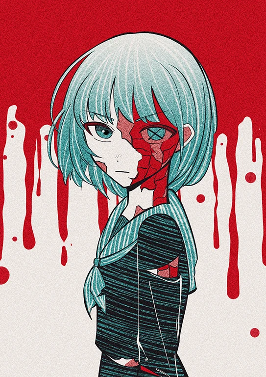
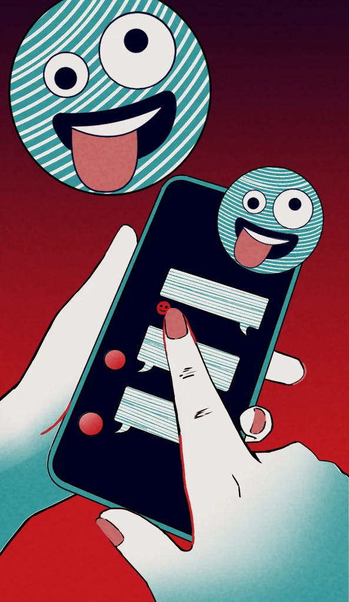
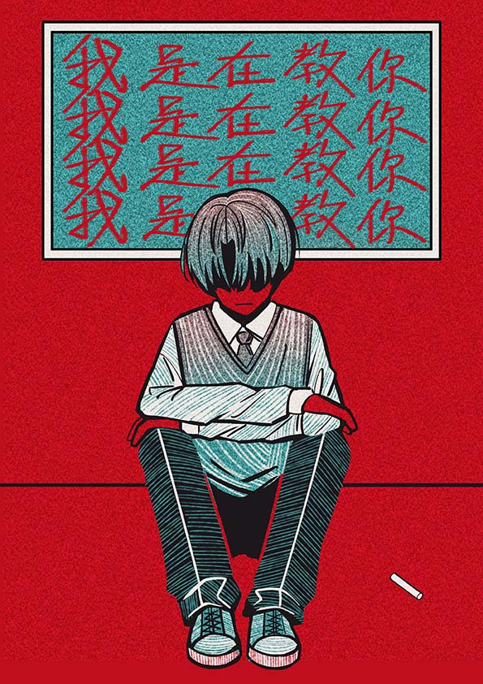

Floating Cards
以 Three.js 建立首頁漂浮卡牌，讓使用者先進入一個不穩定、被語句包圍的情緒空間。
INTERACTIVE WEB · NARRATIVE · FRONT-END
讓難以辨識的情緒壓力，成為可以停下來觀看的體驗。

01 / EXPERIENCE CONCEPT
情緒勒索經常以關心、責任與罪惡感出現。網站從日常熟悉的語句開始，逐步帶入 F.O.G.、循環辨識、界線練習與自我覺察。


02 / INTERACTION SYSTEM
每一種動態都對應一個閱讀目的：建立氛圍、引導探索、呈現關係中的拉扯，或讓使用者停下來回應。
以 Three.js 建立首頁漂浮卡牌，讓使用者先進入一個不穩定、被語句包圍的情緒空間。
透過章節節奏、交錯圖像與捲動進場，把心理教育內容拆成可逐步理解的敘事。
可拖曳卡盒與物理模型保留畢製的遊戲性，讓觀看從單向閱讀變成主動探索。
以五題日常情境回看自己的慣性反應，結果提供覺察線索而不是替使用者貼標籤。


04 / ROLE & COLLABORATION
負責網站資訊架構、視覺介面、響應式排版、捲動敘事與 3D／互動前端整合。
卡牌繪圖與 3D 模型由團隊成員製作，並由我整合進網站體驗。
05 / REFLECTION
這個專案讓我練習在視覺張力、資訊責任與互動趣味之間取得平衡。網站不只需要吸引目光，也必須讓敏感內容被清楚、克制且不貼標籤地理解。